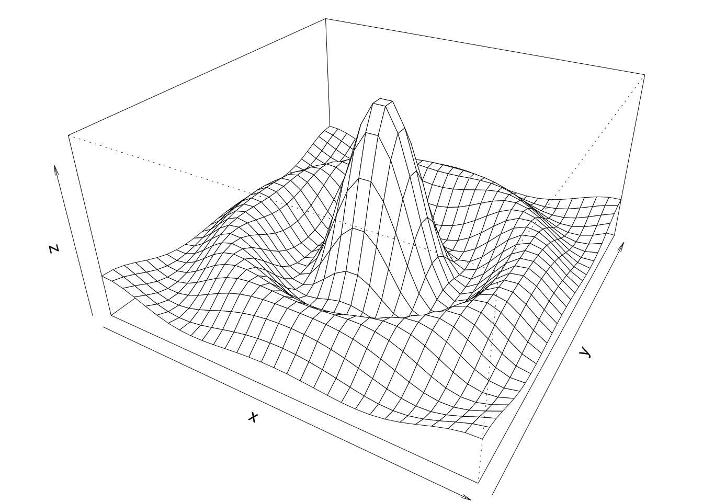

plot(pressure, pch=16); text(150, 600, "Pressure (mm Hg)\nversus\nTemperature (Celsius)")
plot(pressure, pch=16); text(150, 600, "Pressure (mm Hg)\nversus\nTemperature (Celsius)")
x <- c(0.5, 2, 4, 8, 12, 16)
y1 <- c(1, 1.3, 1.9, 3.4, 3.9, 4.8)
y2 <- c(4, .8, .5, .45, .4, .3)
par(las=1, mar=c(4, 4, 2, 4), cex=.7)
plot.new()
plot.window(range(x), c(0, 6))
lines(x, y1)
lines(x, y2)
points(x, y1, pch=16, cex=2) # Try different cex?
points(x, y2, pch=21, bg="white", cex=2) # Different background color
par(col="gray50", fg="gray50", col.axis="gray50")
axis(1, at=seq(0, 16, 4)) # 1=bottom, 2=left, 3=top, 4=right
axis(2, at=seq(0, 6, 2))
axis(4, at=seq(0, 6, 2))
box(bty="u")
mtext("Travel Time (s)", side=1, line=2, cex=0.8)
mtext("Responses per Travel", side=2, line=2, las=0, cex=0.8)
mtext("Responses per Second", side=4, line=2, las=0, cex=0.8)
text(4, 5, "Bird 131")
par(mar=c(5.1, 4.1, 4.1, 2.1), col="black", fg="black", col.axis="black")
# Random data
Y <- rnorm(50)
# Make sure no Y exceed [-3.5, 3.5]
Y[Y < -3.5 | Y > 3.5] <- NA # Selection/set range
x <- seq(-3.5, 3.5, .1)
dn <- dnorm(x)
par(mar=c(4.5, 4.1, 3.1, 0))
hist(Y, breaks=seq(-3.5, 3.5), ylim=c(0, 0.5),
col="gray80", freq=FALSE)
lines(x, dnorm(x), lwd=2)
par(mar=c(5.1, 4.1, 4.1, 2.1))par(mar=c(2, 3.1, 2, 2.1))
midpts <- barplot(VADeaths,
col=gray(0.1 + seq(1, 9, 2)/11),
names=rep("", 4))
mtext(sub(" ", "\n", colnames(VADeaths)),
at=midpts, side=1, line=0.5, cex=0.5)
text(rep(midpts, each=5), apply(VADeaths, 2, cumsum) - VADeaths/2,
VADeaths,
col=rep(c("white", "black"), times=3:2),
cex=0.8)
par(mar=c(5.1, 4.1, 4.1, 2.1)) 
par(mar=c(3, 4.1, 2, 0))
boxplot(len ~ dose, data=ToothGrowth,
boxwex=0.25, at=1:3 - 0.2,
subset=supp=="VC", col="white",
xlab="", ylab="tooth length", ylim=c(0, 35))
mtext("Vitamin C dose (mg)", side=1, line=2.5, cex=0.8)
boxplot(len ~ dose, data=ToothGrowth, add=TRUE,
boxwex=0.25, at=1:3 + 0.2,
subset=supp=="OJ")
legend(1.5, 9, c("Ascorbic acid", "Orange juice"),
fill=c("white","gray"), bty="n")
par(mar=c(5.1, 4.1, 4.1, 2.1))
x <- seq(-10, 10, length=30)
y <- x
f <- function(x,y) { r <- sqrt(x^2 + y^2); 10 * sin(r)/r }
z <- outer(x, y, f); z[is.na(z)] <- 1
par(mar=c(0, 0.5, 0, 0), lwd=0.5)
persp(x, y, z, theta=30, phi=30, expand=0.5)
par(mar=c(5.1, 4.1, 4.1, 2.1), lwd=1)
par(mar=c(0, 2, 1, 2), xpd=FALSE, cex=0.5)
pie.sales <- c(0.12, 0.3, 0.26, 0.16, 0.04, 0.12)
names(pie.sales) <- c("Blueberry","Cherry","Apple","Boston Cream","Other","Vanilla")
pie(pie.sales, col=gray(seq(0.3, 1.0, length=6)))
library(readxl)
hpi_path <- "/Users/jingtao/Desktop/FALL 2025/DATA VISUALIZATION/Assignment 2/HPI_2024_public_dataset.xlsx"
df <- tryCatch(
read_excel(hpi_path, sheet = "All Data", skip = 1),
error = function(e) read_excel(hpi_path, sheet = "1. All countries", skip = 8)
)Warning: Expecting numeric in A2436 / R2436C1: got 'Coefficients used'Warning: Expecting numeric in A2444 / R2444C1: got 'Year by year data'Warning: Expecting numeric in G2444 / R2444C7: got 'Means'Warning: Expecting numeric in L2444 / R2444C12: got 'Stdevs'Warning: Expecting numeric in Q2444 / R2444C17: got 'CoVs'Warning: Expecting numeric in D2445 / R2445C4: got 'Scale up factor for year'Warning: Expecting numeric in E2445 / R2445C5: got 'Global Pop'Warning: Expecting numeric in G2445 / R2445C7: got 'LifeExp'Warning: Expecting numeric in H2445 / R2445C8: got 'Ladder'Warning: Expecting numeric in I2445 / R2445C9: got 'Carbon'Warning: Expecting numeric in J2445 / R2445C10: got 'Adj Lad x Life Exp'Warning: Expecting numeric in L2445 / R2445C12: got 'LifeExp'Warning: Expecting numeric in M2445 / R2445C13: got 'Ladder'Warning: Expecting numeric in N2445 / R2445C14: got 'Carbon'Warning: Expecting numeric in Q2445 / R2445C17: got 'LifeExp'Warning: Expecting numeric in R2445 / R2445C18: got 'Ladder'Warning: Expecting numeric in U2445 / R2445C21: got 'Carbon'Warning: Expecting logical in V2445 / R2445C22: got 'Adj Lad x Life Exp'Warning: Expecting logical in X2446 / R2446C24: got 'A'Warning: Expecting logical in Y2446 / R2446C25: got 'Year_lookup!A1:A2'Warning: Expecting logical in X2447 / R2447C24: got 'B'Warning: Expecting logical in Y2447 / R2447C25: got 'Year_lookup!B1:B2'Warning: Expecting logical in X2448 / R2448C24: got 'C'Warning: Expecting logical in Y2448 / R2448C25: got 'Year_lookup!C1:C2'Warning: Expecting logical in X2449 / R2449C24: got 'D'Warning: Expecting logical in Y2449 / R2449C25: got 'Year_lookup!D1:D2'Warning: Expecting logical in X2450 / R2450C24: got 'E'Warning: Expecting logical in Y2450 / R2450C25: got 'Year_lookup!E1:E2'Warning: Expecting logical in Y2451 / R2451C25: got 'Year_lookup!F1:F2'Warning: Expecting logical in X2452 / R2452C24: got 'G'Warning: Expecting logical in Y2452 / R2452C25: got 'Year_lookup!G1:G2'Warning: Expecting logical in X2453 / R2453C24: got 'H'Warning: Expecting logical in Y2453 / R2453C25: got 'Year_lookup!H1:H2'Warning: Expecting logical in X2454 / R2454C24: got 'I'Warning: Expecting logical in Y2454 / R2454C25: got 'Year_lookup!I1:I2'Warning: Expecting logical in X2455 / R2455C24: got 'J'Warning: Expecting logical in Y2455 / R2455C25: got 'Year_lookup!J1:J2'Warning: Expecting logical in X2456 / R2456C24: got 'K'Warning: Expecting logical in Y2456 / R2456C25: got 'Year_lookup!K1:K2'Warning: Expecting logical in X2457 / R2457C24: got 'L'Warning: Expecting logical in Y2457 / R2457C25: got 'Year_lookup!L1:L2'Warning: Expecting logical in X2458 / R2458C24: got 'M'Warning: Expecting logical in Y2458 / R2458C25: got 'Year_lookup!M1:M2'Warning: Expecting logical in X2459 / R2459C24: got 'N'Warning: Expecting logical in Y2459 / R2459C25: got 'Year_lookup!N1:N2'Warning: Expecting logical in X2460 / R2460C24: got 'O'Warning: Expecting logical in Y2460 / R2460C25: got 'Year_lookup!O1:O2'Warning: Expecting logical in X2461 / R2461C24: got 'P'Warning: Expecting logical in Y2461 / R2461C25: got 'Year_lookup!P1:P2'Warning: Expecting numeric in A2466 / R2466C1: got 'Average of all years'Warning: Expecting numeric in E2468 / R2468C5: got 'Correlation with HPI'Warning: Expecting numeric in P2468 / R2468C16: got 'Extra HPLY (above min)'Warning: Expecting numeric in E2469 / R2469C5: got 'Correlation with HPI
(2015)'New names:
• `` -> `...15`
• `` -> `...22`
• `` -> `...23`
• `` -> `...24`
• `` -> `...25`if ("LifeExp" %in% names(df)) {
life_col <- "LifeExp" # All Data
hpi_col <- "HPI"
country_col <- "Country"
region_col <- "Continent"
} else {
life_col <- "Life Expectancy (years)" # 1. All countries
hpi_col <- "HPI"
country_col <- "Country"
region_col <- "Continent"
}
ok <- complete.cases(df[[life_col]], df[[hpi_col]])
x_le <- as.numeric(df[[life_col]][ok]) # life expectancy
y_hpi <- as.numeric(df[[hpi_col]][ok]) # HPI score
cty <- df[[country_col]][ok]
reg <- df[[region_col]][ok]
length(x_le); length(y_hpi)[1] 2135[1] 2135head(data.frame(country = cty, lifeexp = x_le, hpi = y_hpi), 6) country lifeexp hpi
1 Vanuatu 70.449 57.86116
2 Sweden 82.983 55.93532
3 El Salvador 70.748 54.67388
4 Costa Rica 77.023 54.13215
5 Nicaragua 73.837 53.56492
6 Denmark 81.375 53.04326par(las=1, mar=c(4,4,1.5,1))
plot(x_le, y_hpi, pch=16,
xlab="Life expectancy (years)", ylab="HPI score")plot(x_le, y_hpi, pch=16,
xlab="Life expectancy", ylab="HPI score")
o <- order(x_le)
lines(x_le[o], y_hpi[o], lwd=1.3) plot.new()
plot.window(range(x_le, na.rm=TRUE), range(y_hpi, na.rm=TRUE))
axis(1); axis(2); box()
points(x_le, y_hpi, pch=21, bg="white", cex=1.1)plot.new()
plot.window(range(x_le, na.rm=TRUE), range(y_hpi, na.rm=TRUE))
axis(1, at = pretty(range(x_le, na.rm=TRUE)))
axis(2, at = pretty(range(y_hpi, na.rm=TRUE)))
axis(3, labels=FALSE)
axis(4, labels=FALSE)
box()
points(x_le, y_hpi, pch=16)plot.new(); plot.window(c(0,1), c(0,1))
box(bty="u") par(las=1, mar=c(4,4,1,1))
ylim <- range(y_hpi, na.rm = TRUE)
ylim[2] <- ylim[2] * 1.08
plot(x_le, y_hpi, pch = 16,
xlab = "Life expectancy", ylab = "HPI score",
ylim = ylim)
best <- which.max(y_hpi)
lab <- if (!is.null(cty) && !is.na(cty[best]) && nchar(cty[best]) > 0)
as.character(cty[best]) else "Top country"
points(x_le[best], y_hpi[best], pch = 21, bg = "white", cex = 1.3)
text(x_le[best], y_hpi[best], labels = lab, pos = 3, cex = 0.9, xpd = NA)plot(x_le, y_hpi, pch=16,
xlab="Life expectancy", ylab="HPI score")
mtext("Bottom margin text", side=1, line=2)
mtext("Left margin text", side=2, line=2)
mtext("Top margin text", side=3, line=0.5)
mtext("Right margin text", side=4, line=0.5)par(mar=c(4.5,4,1,1))
hist(y_hpi, col="gray80", freq=FALSE,
main="Distribution of HPI", xlab="HPI score")
curve(dnorm(x, mean(y_hpi, na.rm=TRUE), sd(y_hpi, na.rm=TRUE)),
add=TRUE, lwd=2)
par(mar=c(5.1,4.1,4.1,2.1))if (!is.null(reg)) {
par(mar=c(6,4,1,1), las=2)
boxplot(y_hpi ~ reg, col="white",
ylab="HPI score", xlab="")
legend("topleft", legend="Regions", bty="n")
par(mar=c(5.1,4.1,4.1,2.1), las=0)
} else {
plot.new(); text(0.5,0.5,"No region/continent column found.", cex=1.1)
}x <- seq(-10, 10, length=30); y <- x
f <- function(x,y){ r <- sqrt(x^2 + y^2); 10*sin(r)/r }
z <- outer(x, y, f); z[is.na(z)] <- 1
par(mar=c(0,0.5,0,0), lwd=0.5)
persp(x, y, z, theta=30, phi=30, expand=0.5)
par(mar=c(5.1,4.1,4.1,2.1), lwd=1)
if (!is.null(reg)) {
tab <- sort(table(reg), decreasing=TRUE)
vals <- as.numeric(tab)
names(vals) <- names(tab)
pie(vals, col = gray(seq(0.3, 1.0, length.out=length(vals))),
main = "Share of countries by region")
} else {
plot.new(); text(0.5,0.5,"No region/continent column found.", cex=1.1)
}